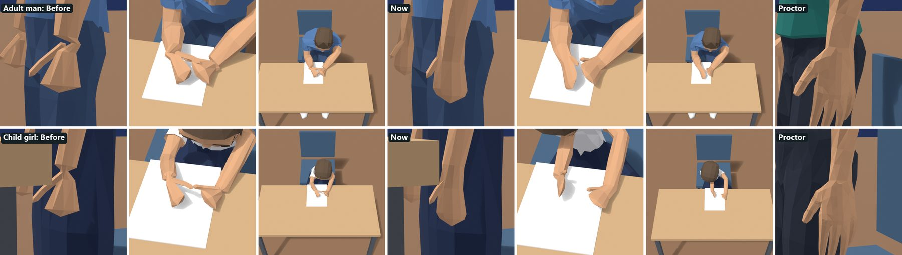
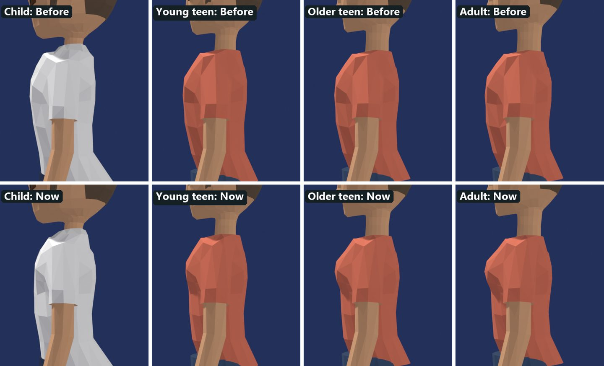
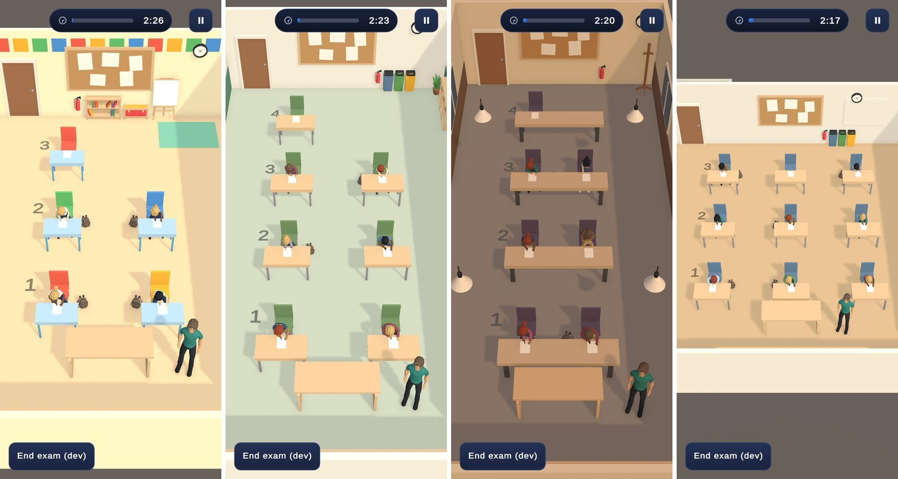
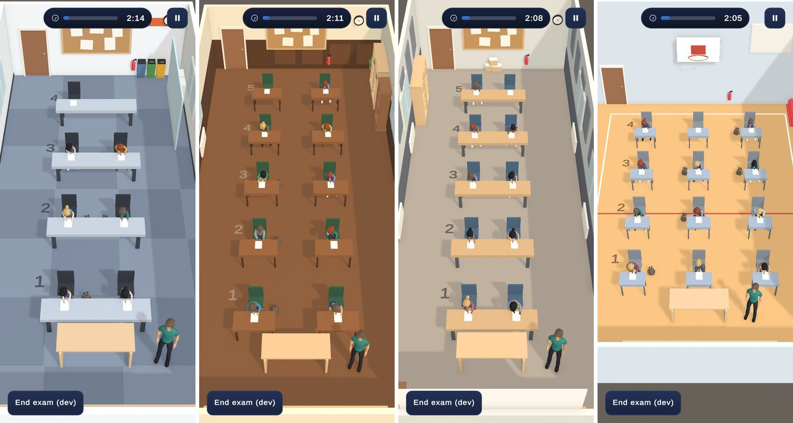
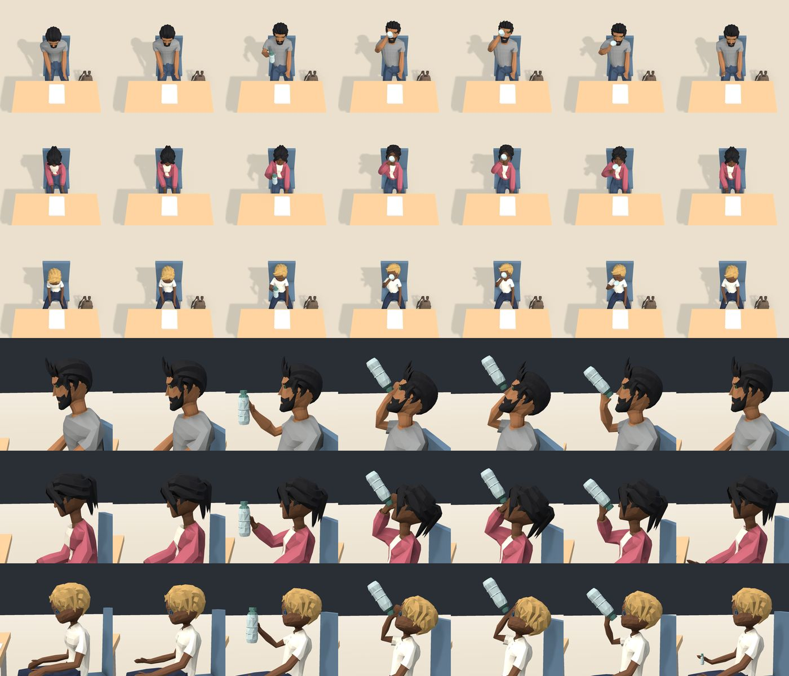
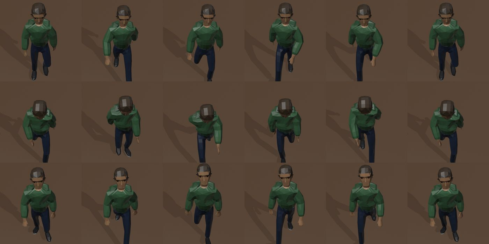
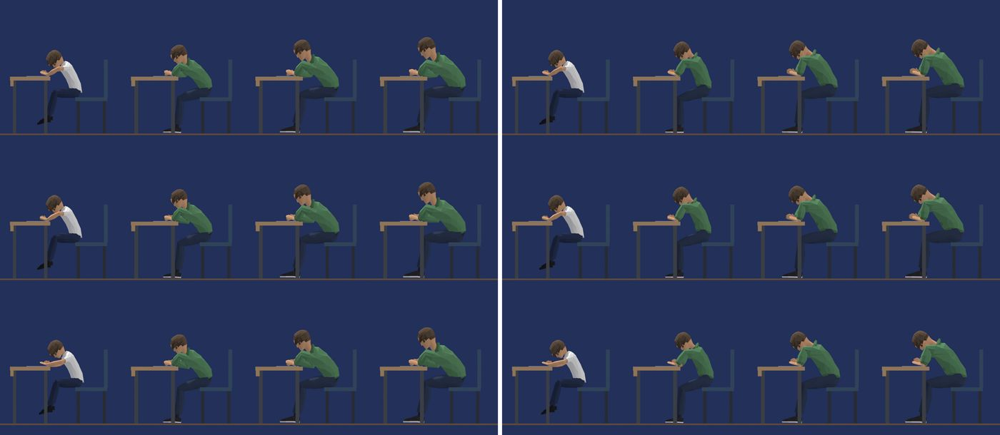
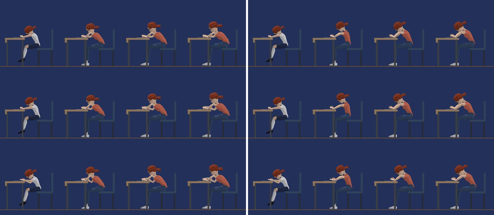
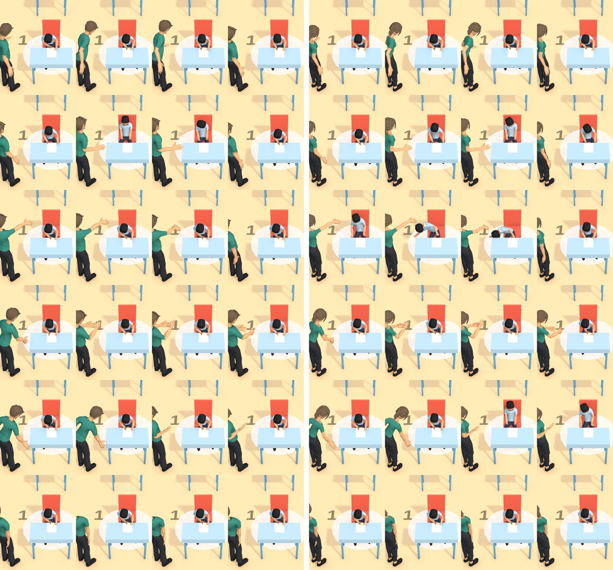

Overnight Art, 26 November
What happened overnight on the student, proctor and classroom art. Two pull requests are merged. Five more are open and waiting for review. Each has a short list of what to look at.
Merged · Open for review · Quality · Made with Meshy · Merge plan · Follow-ups. The full detail is in Student Characters, Classroom Props and Proctor Character.
Merged
Both were updated with main and passed the full test suites. The only failures were ones main itself has.
#18 Student art fixes
merged- Hands have a palm and a thumb.
- Shirt bulges are gone from the tops.
- Women's chests curve under the bust.
- Children write upright.
- Arm pops on releasing the bag are fixed. The child girl releases through Idle.





#17 The first five props
mergedA wall clock, a backpack, bookcases, a water cooler and a snake plant replace placeholder boxes and discs.

Open for review
#30 Room props for every school
in review19 hard-surface props across all eight schools.
- Every school: a fire extinguisher.
- Maple: cubbies, a kids' bookshelf, a toy chest and an easel.
- Riverside: radiators and recycling bins.
- Eastgate: pendant lamps and a coat stand.
- City High: locker banks, radiators and bins.
- Brightpath: filing cabinets and bins.
- Kingsley: a trophy cabinet, the crest and radiators.
- University: exam boxes, a lectern and radiators.
- National: a hoop, wall bars, gym mats and a gym bench.
It also fixes four placements that were already wrong: Kingsley's crest over the door, Riverside's posters over the windows, City High's lockers in a window, and Eastgate's lamps that never appeared. The proctor now walks around furniture. A test keeps the lane beside the door queue open.




Look at: the University lectern. Only a corner of it shows, at the bottom left.
#31 Drinking, walk variety, queue waiting
in review- Students drink from a water bottle. The game's drinking signal had no animation before.
- Each student walks in one of three styles: the old walk, hurried or relaxed.
- Students in the door queue look around while they wait.
- A bug fix: every Meshy clip's hip movement was flipped and enlarged. It is not now.




Look at: the bottle appears in the hand as it lifts, rather than being picked up.
#32 Proctor wardrobe
in review- The woman proctor's 17 wardrobe tops now curve under the bust.
- The proctor's hair uses the corrected ash brown.

Look at: a straight crease under the bust on the low-poly tops. The US flag print folds along it.
#33 Upright writing for every age band
in review- Teens and adults write with a straight back instead of hunching over the desk.
- 24 unused clips that failed their checks are removed, so all 328 animation checks pass.




Look at: the women's forearms. They reach forward long and fairly straight.
#34 Proctor action gestures
in review · built on #32- Each of the six actions has its own gesture: observe, talk, warn, inspect, confiscate and remove. Before, they all used one frozen pose.
- The proctor turns to face the student.
- The wardrobe is refitted so skin doesn't show through the sleeves.


- Look at: Remove often points off-screen in the zoomed camera.
- Look at: Warn has no pointing finger yet.
Quality
Every PR had at least one independent code review. The real problems were fixed before it opened. Notable catches:
- Furniture closed the walking lane beside the door queue.
- A water bottle sank into the desk.
- A pose flicker cancelled the child girl's pop fix.
- Tapping an action again snapped the proctor to its default pose.
- The wardrobe refit put the bust on the wrong part of the polo and the jackets.
#30 to #34 ran scoped tests only. Each runs the full suites before merging.
Made with Meshy
- Room props, in three rounds. Rejected for a crumpled, generated look: printer, round and square bins, chair stack, abacus, messenger bag, leafy plant, pencil case. Not placed: projector cart, rolling whiteboard.
- Student motion clips: drinking, walks and queue waiting.
- Seated idle clips, kept in the library but not used in the game. Idle only shows for moments in an exam.
- The six proctor gestures.
Merge plan
- #32 before #34. #34 is built on it.
- #31 and #33 both regenerate the student animation files. Whichever merges second needs a rebake.
- Main has moved since (for example, a language review). Each PR gets main merged in and the full suites before merging.
Follow-ups
- The items to look at in each PR above.
- A phone memory check for the new props.
HubNavigationSceneTestsfails on main itself. It does not come from this work.